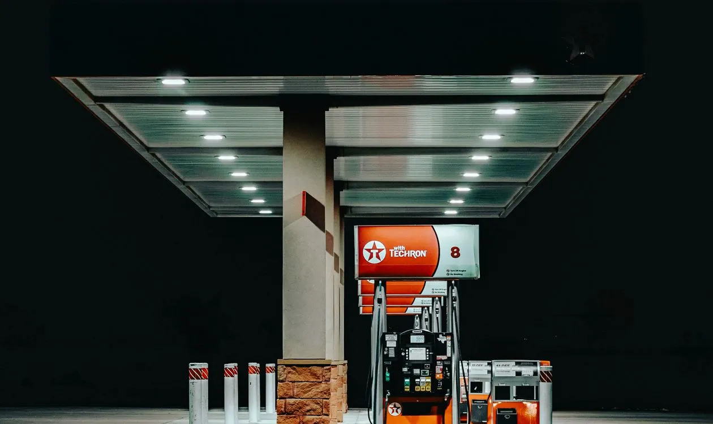

Cette page est la vue régionale des prix de l'essence dans les Laurentides : chaque jour, Le Coin des Laurentides relève les stations de 8 secteurs — Saint-Jérôme, Mirabel, Blainville, Sainte-Thérèse, Saint-Eustache, Saint-Colomban, Lachute et Saint-Sauveur — à partir des données de la Régie de l'énergie du Québec. Le détail complet, station par station, est sur la page de chaque ville (liens ci-dessous). Pour le palmarès — la station la moins chère de chaque secteur et la méthode de relevé — voyez essence pas chère dans les Laurentides. Le résumé du matin existe aussi en vidéo du jour.

Voir le classement d'aujourd'huiPetro-Canada Boni-Soir
1149, boul. Saint-Antoine, Saint-Jérôme (QC) J7Z 7M1
Tél. : (450) 304-4010
Exemple de relevé : le mercredi 14 octobre 2026, l'essence ordinaire y était affichée à 188,8 ¢/litre. Le classement complet de Saint-Jérôme, station par station, est sur la page des prix de l'essence à Saint-Jérôme.
Les écarts entre secteurs atteignent régulièrement plusieurs cents le litre. Le mercredi 14 octobre 2026, par exemple, la station la moins chère de Lachute affichait 183,9 ¢/litre pendant que les prix les plus bas de Saint-Eustache, Saint-Colomban et Saint-Sauveur étaient à 190,9 ¢/litre — une différence de 7 ¢/litre, soit environ 3,50 $ sur un plein de 50 litres. Consulter le classement avant de faire le plein prend moins d'une minute et rapporte à chaque visite.
Les prix sont relevés le matin et peuvent changer en cours de journée. En cas d'écart, c'est toujours le prix affiché à la station qui s'applique.
Où est l'essence la moins chère à Saint-Jérôme aujourd'hui?
Sur la page dédiée : prix de l'essence à Saint-Jérôme, avec le classement complet du jour et l'historique de la ville.
Quelle est la différence entre cette page et le palmarès « essence pas chère »?
Cette page donne la vue régionale des 8 secteurs. Le palmarès de l'essence pas chère ne retient que la station la moins chère de chaque secteur et explique la méthode de relevé.
D'où viennent les prix affichés?
Des relevés de la Régie de l'énergie du Québec, l'organisme qui surveille les prix des produits pétroliers au Québec.
Quels secteurs sont couverts?
Saint-Jérôme, Mirabel, Blainville, Sainte-Thérèse, Saint-Eustache, Saint-Colomban, Lachute et Saint-Sauveur.
Chaque secteur a sa page dédiée, avec son classement complet du jour, station par station, et son historique des prix :
Prix de l'essence à Saint-Jérôme
Prix de l'essence à Mirabel
Prix de l'essence à Blainville
Prix de l'essence à Sainte-Thérèse
Prix de l'essence à Saint-Eustache
Prix de l'essence à Saint-Colomban
Prix de l'essence à Lachute
Prix de l'essence à Saint-Sauveur
À la station vedette de Saint-Jérôme, profitez aussi du lave-auto sans contact (forfaits dès 7,99 $ avec achat d'essence).